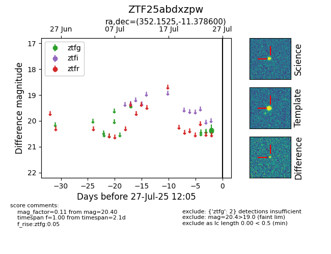

Target ZTF25abdxzpw at 2025-07-27 12:05, see:
FINK: fink-portal.org/ZTF25abdxzpw
Lasair: lasair-ztf.lsst.ac.uk/objects/ZTF25abdxzpw
ALeRCE: alerce.online/object/ZTF25abdxzpw
alt names
ZTF25abdxzpw (ztf,fink)
coordinates:
equatorial (ra, dec) = (352.1525,-11.37860)
galactic (l, b) = (67.9140,-64.97112)
photometry
last ztfg=20.40
2 ztfg detections
